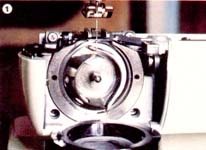
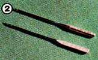
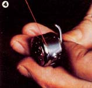
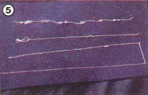
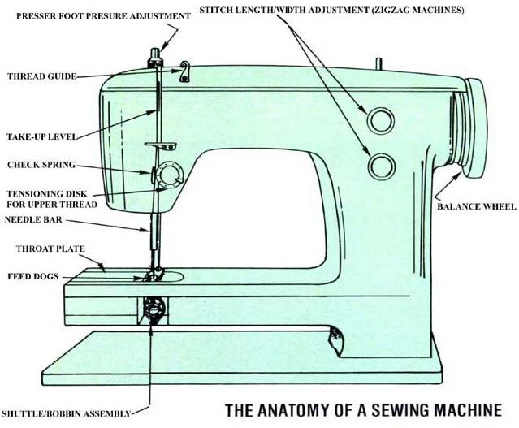

Sewing Machine Surgery Made Simple
By Duane Sommerfield
March/April 1983
Anyone can learn how to remedy the malfunctions typical of this common household helper.
Since its invention more than 100 years ago, the sewing machine has become one of the most popular pieces of do-it-yourself equipment in North America. Unfortunately, this device has probably also generated more frustration than any other tool or appliance.
After all, the money to be saved by doing the family's sewing can be eaten into pretty quickly when a few $25 (on the average) "cleaning and adjusting" bills are allowed to add up. Worse yet, many folks-unable to afford professional repairs and unwilling to face the task of fussing with the innards of the machines themselves-end up abandoning projects when their stitchers malfunction ... and such people often abandon a considerable investment in materials and time, as well.
I've certainly never been trained as a repairman. In fact, I'm not even sure-in theory-how a sewing machine works, and I have two left hands, to boot. Despite all that, though, with the help of my trusty screwdriver and the patient instruction of Johnny Sweder, a local Viking service representative, I've been able to keep four machines running for the past six years ... and one of those units was used daily, often by novice seamsters and seamstresses! Better still, my repair bill for all four machines during those six years totaled $16 for parts. (That figure, of course, doesn't include the thread, bobbins, needles, and light bulbs used during the same period.)
Furthermore, I think that the knowledge Mr. Sweder passed along to me might be of help to other folks concerned with the care and feeding of automatic stitchers. And who knows, the following bits of advice just might reduce the number of four-letter words that fly around your sewing area!
DIAGNOSING SERIOUS ILLNESSES
It's been my observation that [1] most sewing machine maladies occur because the operator cuts corners (for example, neglecting regular cleanings ... trying to use unfamiliar "bargain" needles and such ... or simply not bothering to take a quick "refresher" read through the instruction book after spending a long period without sewing), and [2] nine times out of ten, the resulting malfunctions are nevertheless-miraculously-minor and can be fixed at home.
But still, some problems do occur that are quite severe and beyond the scope of the average do-it-yourselfer. It's a good idea, therefore, to learn how to spot the troubles that will likely require a trip to the repair shop. (These same problems are, of course, important ones to look for-and avoid-in any machine you might consider buying!)
BROKEN GEARS OR BELTS
Remove the bobbin case and hold the shuttle with your left hand. If you can turn the balance wheel while holding the shuttle in place-or if you hear a racheting sound while turning the wheel-then you have reason to suspect this serious problem. (See Photo 1.)
TIMING
Secure a new needle into the bar. Now, with the bobbin case still removed, look into the race while turning the balance wheel (slowly!) toward yourself. The tip of the shuttle should pass the needle at a point 3/32 inch above the eye. If the needle hits any part of the shuttle or race, you'll know that the timing is off. And, unless you have a service manual and are reasonably skilled with things mechanical, you'll likely need the services of a professional.
EXCESSIVE PLAY
To diagnose this particular malfunction, hold the balance wheel stationary with your right hand. Then grasp the needle bar with your left thumb and forefinger and try to push it up into the machine. You shouldn't be able to lift the needle bar at all while you're holding the balance wheel.
CURING MINOR AILMENTS
If you're checking out your own suddenly on-the-blink machine and find that it passes the three foregoing tests, you'll likely be able to identify the problem by matching the device's symptoms with those that follow. (I've arranged the possible causes of each malfunction according to the likelihood that they will occur.)
However, before you undertake any repair, you might want to simply clean the stitcher ... since the accumulation of lint and assorted "gunk" can cause a good many problems. And you'd be surprised just how rapidly a machine can get dirty!
Use a small brush to remove lint and such from the machine. Then, if you notice a buildup on any of the parts-and particularly if it's on the shuttle and race-wipe the greasy deposits off with a soft, solventdampened cloth before re-oiling. With the cleaning done, you can compare symptoms (if, that is, they're still present!) with those listed here.
THREAD BREAKING FREQUENTLY
[1] The needle might be in backwards (see Photo 2). Be sure the thread enters the eye from the needle's slotted side. And if your machine threads from front to back, remember that the flat portion of the needle's shank should be facing the rear of the stitcher.
[2] The thread is catching on the slot in the spool (see Photo 3). This problem occurs especially often when styrene spools are used. Either break the slotted section from the threadholder's rim or simply turn it upside down on the spindle.
[3] Your machine is threaded incorrectly. If, for instance, you thread the unit while the presser foot is down, the thread may ride up onto the top of the tensioning disks rather than between them ... causing it to loop on the underside of the material you're sewing and break.
[4] You failed to hold the loose ends of the thread when you started to sew. Some machines are very touchy about this ... and if you don't hold the threads while the first few stitches are made, the strands will pull down into the race and snarl, causing the top thread to break.
[5] The point of the shuttle is badly burred. To determine if this is the case, just remove the shuttle from the race and inspect it. If the unit is thread-cut, you'll have to replace it. Should it be only burred, though, use a fine emery cloth to remove the burs, and then buff the shuttle. Be careful, though, not to remove too much material or change the shape of the device.
[6] The throat plate is either damaged or burred. Replace the part if it's broken or thread-cut. Burs can, of course, be carefully removed with a thin strip of emery cloth.
[7] The bobbin is in backwards. If you pull on the bobbin thread while it's loaded into the case, the bobbin should rotate clockwise (when observed from the rear of the case). Note that there are a few that are designed to turn in the opposite direction, though. Consult your instruction book if you're in doubt as to how your machine should operate.
UNBALANCED TENSION
The most common of sewing machine maladies is probably unbalanced tension ... if the tension is properly set, the top and bottom threads will knot within the fabric being sewn.
If your machine has a removable bobbin case, begin trouble-shooting by inspecting the area under the thread tensioning spring. To do so, remove the upper screw and rotate the spring one-quarter turn to the right, as in Photo 4. Be careful, though: The screw is very small and will have only three or four threads ... so it will be all too easy to lose it! Now, clean and inspect the underside of the spring and the surface of the case. Should the latter be thread-cut, you'll have to replace it.
With that done, reinstall the screw and adjust it so that the bobbin case' when it's suspended from the bobbin thread, remains in place until the thread is shaken up and down gently. Adjusting the spring to this point should allow the top thread tension to be in the high midrange (that is, between points 5 and 7 on a scale of 1 to 10), with the threads knotting in the middle of the material being sewn.
On the other hand, if your machine doesn't have a removable bobbin case, thread the unit-both top and bottom-and tie the ends of the threads together. Then adjust the top thread tension to midrange and make sure the presser foot is down but not resting on the threads. Now, place a screwdriver in the loop formed by the two threads-close to the knot- and pull the threads toward the rear of the machine. Finally, adjust the bobbin tension spring screw until the knot stays in one place, relative to the screwdriver, when you pull on the loop.
If the stitching on the underside of the material resembles that on the far right in Photo 5 after you've adjusted the bobbin tension spring, you probably have the machine threaded incorrectly. In this case, there is no tension on the upper thread, and-as a result-it is drawn completely through the material and loops on the underside. (Should loops form on the top of the material, you can assume that the top tension is too tight or the bottom is too loose ... and in such a case it's still best to adjust the bobbin tension first, in order to achieve a balance between the two.)
SKIPPING OR UNEVEN STITCHES
[1] The race is dirty or the spindle has a piece of thread wrapped around its base. Remove the bobbin case and inspect these components.
[2] There's dirt under the tensioning spring on the bobbin case. Follow the instructions for tensioning.
[3] The thread is not wrapped evenly on the bobbin. If you fail to keep uniform pressure while wrapping the bobbin, the thread can develop backlashes.
[4] You're using the wrong needle. Working with a regular needle on knit fabrics can result in skipped stitches ... always use a ball point needle on such materials.
[5] The needle has become fouled. (This is common during work with coated fabrics.) Either change it or clean it with lighter fluid or nail polish remover. Then apply a small amount of ChapStick-brand lip balm to the needle and rub it in with your fingers before continuing your project.
[6] The needle is bent and has to be replaced.
[7] The timing is off. To determine if this more serious problem has occurred, see the "Timing" section above.
[8] Your thread is not of a uniform diameter. It's best to select a thread with a smooth finish and low lint. In general, the all-polyester or the cotton-covered polyester threads are probably the easiest to use.
[9] A small piece of thread is protruding from the hole in the side of the bobbin. If you're in the habit of using these openings when starting thread on a bobbin, be sure to nip the cord off flush with the bobbin before you start to sew. If any of the thread is left protruding, it can rub on the race and cause the bobbin to jam.
[10] The bobbin is warped or burred, and should be replaced.
[11] The upper tension disks are dirty. Spray a thin strip of cotton cloth with WD40-brand lubricant and work the cloth back and forth between the disks to remove the accumulated gunk.
PUCKERING MATERIAL
[1] You need to apply more tension to the cloth as it feeds through the machine. Don't pull it through, though ... let the machine feed it, but do apply gentle tension.
[2] You're using a too large needle. Sizes 9 to 12 are generally appropriate for light fabrics ... while 12 to 14 should be used for medium-weight cloth, and 16 to 18 for heavier material.
[3] The needle is badly burred and should be replaced.
[4] Both the top and bottom threads are too tight for the type of material you're working with. Adjust the tension.
UNEVEN FEEDING
[1] You've inadvertently set the device on "darn" or "applique". Change the setting.
[2] Lint buildup under the throat plate is preventing the feed dogs from clearing that component. Remove the plate and clean off any lint with a stiff brush.
[3] The feed dogs need to be adjusted for proper clearance above the throat plate. They should protrude about 3/32 inch at the top of the feed cycle. Though the adjustment procedure is likely quite simple, it does vary greatly from one type of machine to another. Check your instruction book before tackling this job.
[4] The pressure on the presser foot is incorrect. When this is set properly, the upper and lower materials will feed at the same rate and will not move from side to side while feeding. When you're quilting, especially, the right adjustment of the presser foot will be essential to even feeding. Experiment with the pressure until the upper and lower material pieces feed at the same rate.
BREAKING NEEDLES
[1] You're pulling the material through the machine. Do apply slight tension, but let the machine do the actual feeding. If you force the work through, you can bend the needle enough to cause it to strike the throat plate and break.
[2] You're trying to feed overly thick material through the machine without first loosening the presser foot to accommodate the extra thickness. It should be possible to sew reasonably heavy material if you don't bind the machine in the process.
[3] The timing is off. See the "Timing" section to determine whether this relatively serious problem has occurred.
SLOW OPERATION
[1] If the balance wheel is difficult to turn, there may be "binding" taking place within the machine. Lubricate and clean the unit.
[2] The brushes are extremely worn. It's likely quite easy to replace the brushes on your machine, but do make sure you unplug the motor before you consult your instruction book and tackle the job. (If the brushes are allowed to wear out completely, they can score the commutator ... and that would necessitate a more serious and expensive repair.)
SEW WHAT ARE YOU WAITING FOR?
By following the organized trouble-shooting approach presented in this article, you ought to be able to diagnose and cure most of the maladies that might strike your trusty stitcher. Happy sewing ... and may all the problems you identify be minor ones!
|
 THE BOBBIN HOUSING |
 Insert the thread into the needle's slotted side. |
 The spool's slot can catch and break the thread. |
 To inspect the area under the under the tensioning spring remove te screw and rotate the spring a quarter-turn to te right. |
 Some samples of stitching from good to bad to worst. |
 |
|
 |
|
|